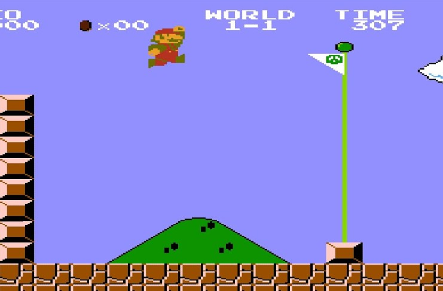
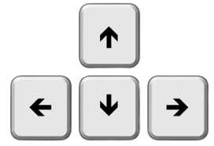
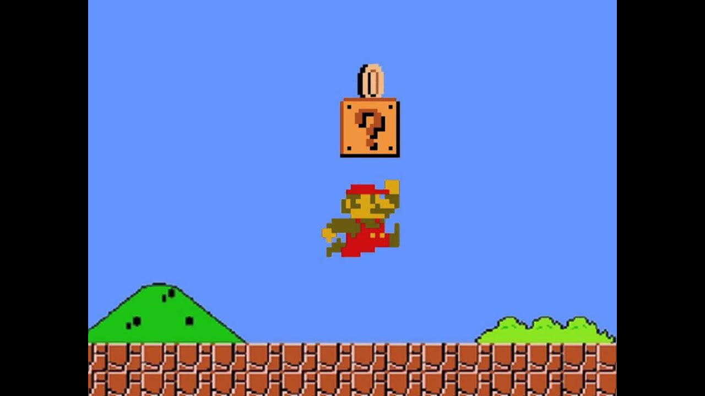
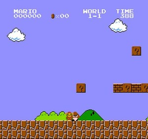
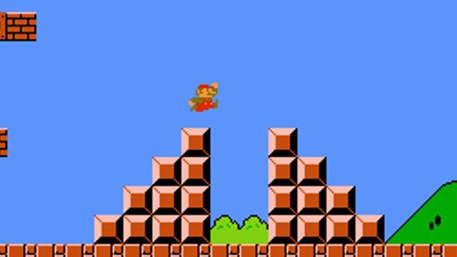
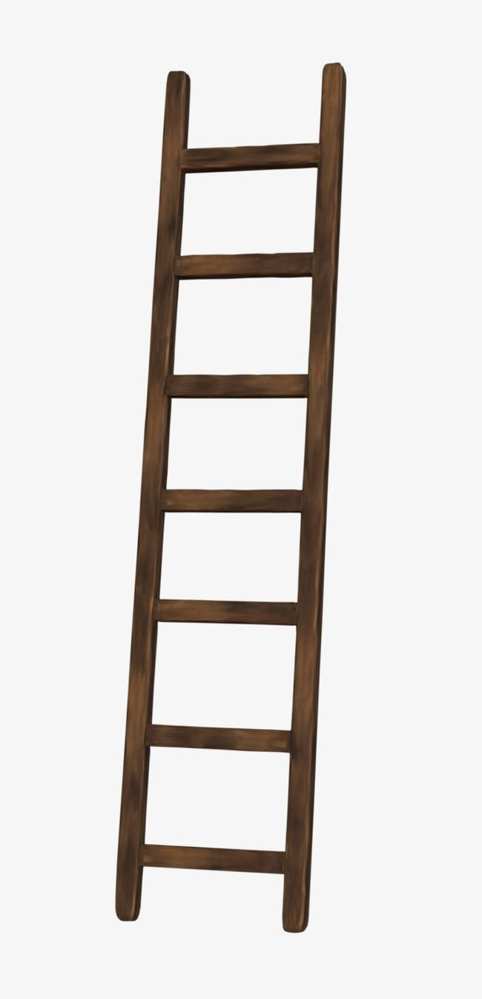

|  |
Purpose Of The GameYou are controlling the Mario character in the game. The goal is to gather as many points as possible and make it to the end without dying. There will be a series of obstacles in your way of doing that. There will be 3 levels for you to complete the game. |
Controls
Use ← to move left |
 |
|  |
How to get points
1. Collect coins that are laying on the surface this will gain you 50 points |
How to die
• Contact with a goomba (not jumping on top of it) will kill you. |
 |
|  |
Different Obstacles
• Jump on top of the green tubes to pass them. You may need to jump from tube to tube to pass! |
LaddersTo go up a ladder, make sure your player is overlapping with the ladder and you're holding the UP key at the same time. This will bring you up the ladder. These are added so you can go back in the map, you don't get stuck (have an escape), and to reach higher platforms in the map. |
 |